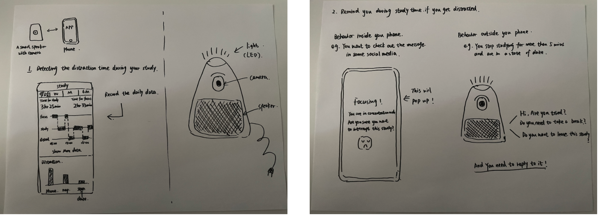
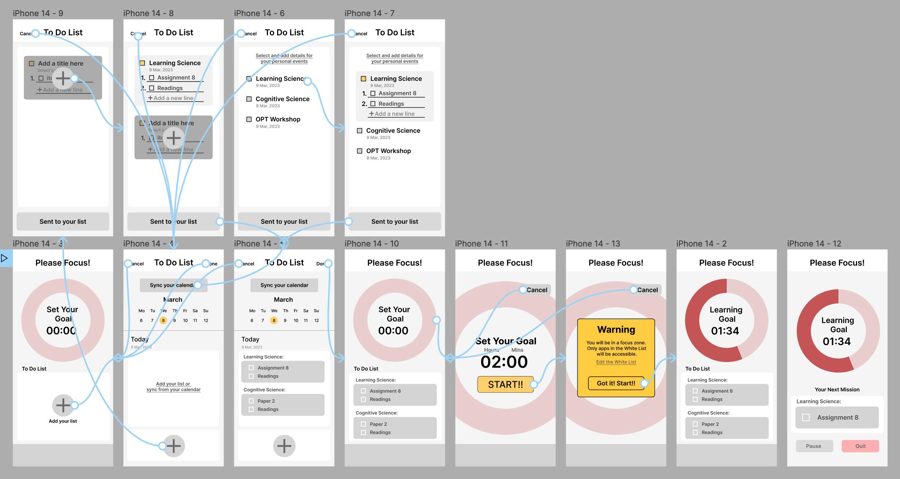
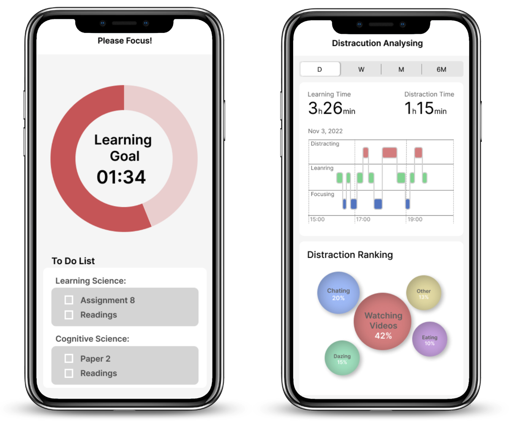

Xdistraction

KEY WORDS
POV Statement
Young adults need a supportive tool to
help them become aware of and stop
distracting behaviors in their studies/work.
Brief
Xdistraction is a mobile application that helps users reduce their distracting behaviors during their learning or working process. Xdistraction could help users be better conscious of their distracting behaviors, organize their study plan and limit the distracting elements.
UX RESEARCH
The Problem
Have you ever encountered this situation? When you are studying on your own, you are often distracted by your phone or your surroundings. Especially under the global epidemic, more and more of the learning process is taking place in the home scenario. Many learners found that they would easily get distracted, leading to a decrease in learning effectiveness.
A major cause of distraction is multi-tasking. Many young people consider themselves good at multitasking. However, under most conditions, the brain can not carry out two complex tasks at the same time (Paul, 2013). So it is hard to read articles and respond to your friends' messages at the same time or write a paper while watching Game of Thrones
According to May and Elder’s research indicates that media multi-tasking interferes with attention and working memory, negatively affecting GPA, testing performance, recall, reading comprehension, notetaking, self-regulation, and efficiency. These effects have been demonstrated during in-class activities and the self-learning process (May & Elder, 2018).
In fact, there are numerous negative outcomes of distraction. These negative effects will include taking longer time to complete learning tasks, causing mental fatigue by switching back and forth between tasks, impairing long-term retention, decreasing learning transfer, and associating with negative performance in school (J. Schmidt, 2020).
I am also troubled by this situation. So I wanted to design and develop an educational tool to help learners better concentrate on their learning and be more efficient.
How Might We Question
User Persona

The target learners will be young adults or adults who have specific independent learning abilities. They should be high school and above learners. Their metacognition is already established, so my idea/project could help them improve their metacognition.
Research Questions
Question 1: Why is this an important problem? Why should people care?According to the 50 questionnaires I returned, the average young adult group of 20-30 has 3-4 hours of independent study or work time per day. 90% of them reported distracting behavior in self-learning and independent work. More than 61% of people spend an average of more than 10 minutes per distraction. In the self-reflection questions, people reported that distractions took up 40% of their time throughout the self-learning/working alone process. The top five distracting behaviors are texting, Web surfing, watching videos, checking emails, and housekeeping. When asked about the causes of distraction, the top three were: communicating with friends or family, feeling bored, and suddenly remembering other things to do. Based on the data in the questionnaire, I believe that distracted behavior has had a significant impact on learners' self-learning process. It is imperative to help them reduce their distracting behaviors.
Question2: How might the characteristics of target users influence your design, media and technology choices?
My target learners are young adults between the ages of 20-30. They have established basic metacognition and have more time for independent learning. Since my target learners are young adults in their 20s, my product will likely balance fun (gamification, timely feedback, etc.) with professionalism (strict correction mechanisms and feedback systems).
Question4: Where are the gaps or problems in what exists today?
Based on the questionnaire data, the top five distracting behaviors are texting, Web surfing, watching videos, checking emails, and housekeeping. However, the existing solutions mentioned in the previous question can cover many of the problems caused by cell phones. However, I think the following research gaps still exist here.
| Internal distractions | Most of the distractions mentioned before that have been covered are actually distractions from the outside. There are actually many internal distractions as well, such as feeling bored and suddenly remembering other things to do. Because even if you lock the applications on your phone, it doesn't reduce the distractions that are caused by getting bored and suddenly remembering something to do. There is little mention of how to eliminate internal distractions in the existing solutions. |
| Beyond the phone | Although it is true that technology like phones has aggressively increased the problem of distracted learning, distractions are always around us. There are a lot of distracting behaviors beyond using a phone, such as housekeeping, snoozing, or even just daze. There is no good prevention to help learners detect and correct this type of distracting behavior. |
| Awareness of distraction | Based on questionnaires and interviews, I found that many people would be surprised that they are actually distracted far more than they think they are. So there is a significant gap that people actually hard to be properly aware that they are distracting and how long they have spent on distracting behaviors. |
Goals of projects
Competitive analysis
Forest App
With a simple mission to help users "stay focused" and "be present," Forest trains people to manage their time and become less dependent on their phones in a fun, purposeful way. By spending time away from their phones, users grow virtual trees and earn coins, which can then be saved up and used to help plant real trees in five countries in Africa — Cameroon, Kenya, Senegal, Uganda, and Tanzania. The app also gently shames you if you don't successfully complete your goal.
I think it’s very innovative in that it creates a new reward mechanism, planting trees. Learners can plant a tree in their own space after they have studied hard to reach their goals. You can also compete with your friends for the number of trees planted, thus gaining motivation and satisfaction. Also, the act of planting a tree itself is a reward, meaning you have accomplished your goal and some of it. The trees are really pretty enough to attract me to use the app. While you are using this app to focus on your studies, you will be banned from using other social, gaming, and video apps on your phone. I believe this will help me to conceptualize my product.
It also refers to the work-reward system of the tomato-shaped kitchen timer, which is developed by Francesco Cirillo.
But as mentioned earlier, the forest app is currently only able to stop distractions via cell phones and trains people to reduce the using time of phones. It can only address the external distractions and build an undisturbed learning environment.
Logic Model

UX DESIGN
Design Process
Xdistraction is a mobile application that helps users reduce their distracting behaviors during their learning or working process. Xdistraction could help users be better conscious of their distracting behaviors, organize their study plan and limit the distracting elements. I designed my first Lo-F prototype based on the following five features.
Early Deisgn
BrainStorm.png)
Sketch: Early Sketch for the camera device and app 

The whole product consists of two parts. A camera for detection and an app.
Lo-Fi Prototype
 Usability Test and Iteration
After interviewing my affinity group, I got feedback from the group members that the interface should be simplified. One of them reports that to-do lists with too many tasks would cause more stress and distraction, which would reduce efficiency. Besides, they suggest that I should also consider the pop-up/emergency events if it is neither learning nor distracting, such as going to the bathroom, drinking water, and such necessary activities.
Based on the above feedback, I modified two sections on the focus page.

From the one-on-one meeting with Maaike, she suggested that I give an explanation of what the app was about to do before starting the focus zone. Otherwise, the user would be confused and not know what was about to happen. In my original design, after downloading the Xdistraction, there would be tutorials to show you how to use the app, at which point the user would be told that you would be blocked from other entertainment applications and your other app usage time would be tracked. But after this feedback, I think a short explanation is necessary.
Therefore, a warning page will be added after setting the focus time and before you start concentrating on your studies. It will alert the user that you will be restricted from other entertaining applications and can lead to a page where you can edit the whitelist. Only after knowing what is about to happen, the user will start studying.

Visual Design Principle
According to research, Low wavelength colors, like green and blue, have been shown in scientific studies to improve focus and efficiency. Green is especially useful for home office workers who spend a lot of time in front of the screen, as it lessens eye fatigue. Therefore, in the visual design, we will use green and blue as the main colors.

Hi-Fi Main Page